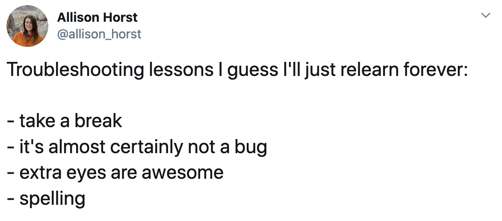

Introduction to R
September, 2024
Chapter 1 Course Logistics and Expectations
1.1 Course Description
In this course, you will learn the fundamentals of R, a statistical programming language, and use it to wrangle data for analysis and visualization. The programming skills you will learn are transferable to learn more about R independently and other high-level languages such as Python. At the end of the class, you will be reproducing analysis from a scientific publication!
1.2 Learning Objectives
After taking this course, you will be able to:
- Analyze Tidy datasets in the R programming language via data wrangling, summary statistics, and visualization.
- Describe how the R programming environment interpret complex expressions made out of functions, operations, and data structures, in a step-by-step way.
- Apply problem solving strategies to debug broken code.
1.3 Course Website
All course information will be available here:
https://hutchdatascience.org/Intro_to_R
Course discussions will be done in the class slack Workspace. Invites will be sent before class.
Lab Assignments will be done in the class Posit.cloud workspace. Students should register at https://posit.cloud before the lab. Link to join the workspace will be sent out before the first lab.
1.4 DaSL Courses are a Psychologically Safe Space
We want everyone to feel ok with asking questions. That’s why we adhere to the Participation Guidelines for each course.
Be respectful of each other and how we learn differently. It is never ok to disparage people for their questions.
1.5 Office Hours
Office Hours will be held via Teams on Fridays. Feel free to drop into the office hours and work and ask questions as needed.
1.6 Clinical Network Issues
We know that learners on the Clinical network are having issues accessing material, including websites. We are working to figure out good workarounds for it.
If you are connected via VPN, we recommend that you disconnect it while working.
1.7 Slack
If you haven’t yet joined the FH Data Slack, you can join here: https://hutchdatascience.org/joinslack/
Look for the #dasl-s4-intro-to-r channel - that’s where we’ll have conversations and field questions.
1.8 Instructor
Ted Laderas, PhD
tladera2@fredhutch.org
Preferred Method of Contact: Email/Slack
Expected Response Time: 24hrs
I’ve been teaching R for over 10 years, and have been an active user of R, a bioinformatician, and data scientist for over 20. I write a lot, including on Data Science, Mental Health, and Bioinformatics.
I’m always excited to see my learners surpass me, and if you are curious enough, I guarantee you will.
1.9 Words of Encouragement
This was adopted from Andrew Heiss. Thanks!
I promise you can succeed in this class.
Learning R can be difficult at first—it’s like learning a new language, just like Spanish, French, or Chinese. Hadley Wickham—the chief data scientist at RStudio and the author of some amazing R packages you’ll be using like ggplot2—made this wise observation:
It’s easy when you start out programming to get really frustrated and think, “Oh it’s me, I’m really stupid,” or, “I’m not made out to program.” But, that is absolutely not the case. Everyone gets frustrated. I still get frustrated occasionally when writing R code. It’s just a natural part of programming. So, it happens to everyone and gets less and less over time. Don’t blame yourself. Just take a break, do something fun, and then come back and try again later.
Even experienced programmers find themselves bashing their heads against seemingly intractable errors. If you’re finding yourself taking way too long hitting your head against a wall and not understanding, take a break, talk to classmates, e-mail me, etc.


1.11 Course Times
I know that everyone is busy, and we’ll do our best to accomodate everyone’s schedule.
Classes will be recorded, but please do not use this as an excuse to miss class. Again, those who are curious and ask questions will learn quite a bit.
1.12 Class Schedule
There are two sections of Intro to R.
- A hybrid (in-person and online) session on Wednesdays (12-1:30 PM PST)
- A completely remote session on Thursdays (2-3:30 PM PST)
When you are enrolled, we will send you teams invites for your section. Please note that we are at capacity for in-person. So if you have enrolled as online, please stay online.
The Hybrid Sections will be held in the Data Science Lab Lounge - Arnold M1- and online. Please note that I will in town and teaching in person on the starred (*) dates below.
Dates when I am not on campus, you are free to attend in the DaSL lounge, but I will be teaching Remotely.
If you are remote, feel free to jump between either sessions.
| Week | Subject | Hybrid Section Dates | Remote Session Dates |
|---|---|---|---|
| 1* | Introduction to R/RStudio | September 25 | September 26 |
| 2 | Data Structures | October 2 | October 3 |
| 3* | Data Visualization | October 9 | October 10 |
| 4 (optional) | Community Session | October 16 | October 16 |
| 5* | Data Wrangling 1 | October 23 | October 24 |
| 6 | Data Wrangling 2 | October 30 | October 31 |
| 7* (optional) | Community Session | November 6 | November 6 |
| 8 | Wrap-up/Discuss Code-a-thon | November 13 | November 14 |
Note that the Community Sessions are Shared between the two sections.
More details about the Code-a-thon to come.
1.13 Community Sessions
Two times this quarter we will have learning community sessions, to talk about applications of what we’re learning. These sessions are optional, but will help you solidify your learning during the course.
These dates are:
October 16 at 12-1:30 PM November 6 at 12-1:30 PM
These dates will be sent to you when you register for the course.
1.14 Patient / Clinical Data is a No on Posit Cloud
The Posit Cloud workspace is for your learning. Please do not put any patient or clinical information on there.
1.15 Offerings
This course is taught on a regular basis at Fred Hutch Cancer Center through the Data Science Lab. Announcements of course offering can be found here. If you wish to follow the course content asynchronously, you may access the course content on this website and exercises and solutions on Posit Cloud. The Posit Cloud compute space can be copied to your own workspace for personal use, and you can get started via this introduction. Or, you can access the exercises and solutions on GitHub.